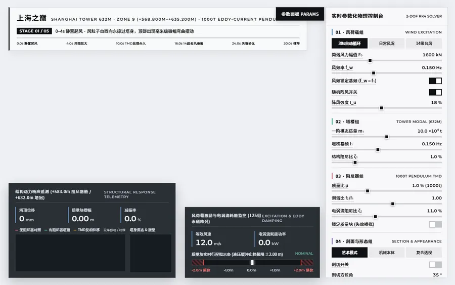
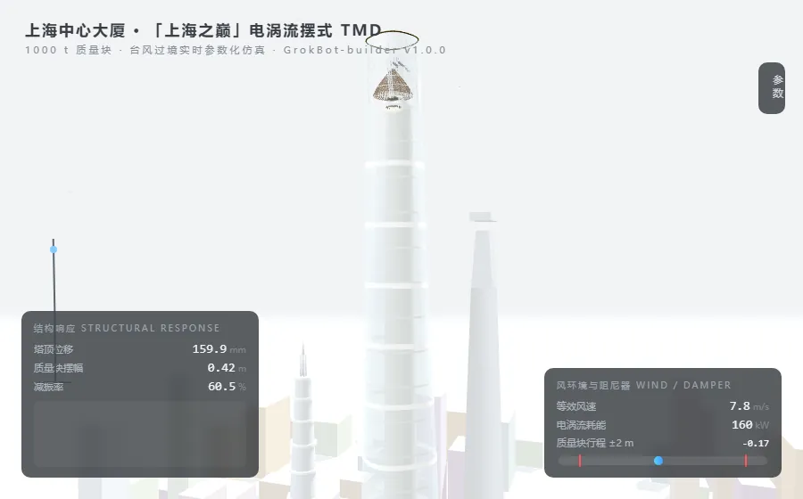
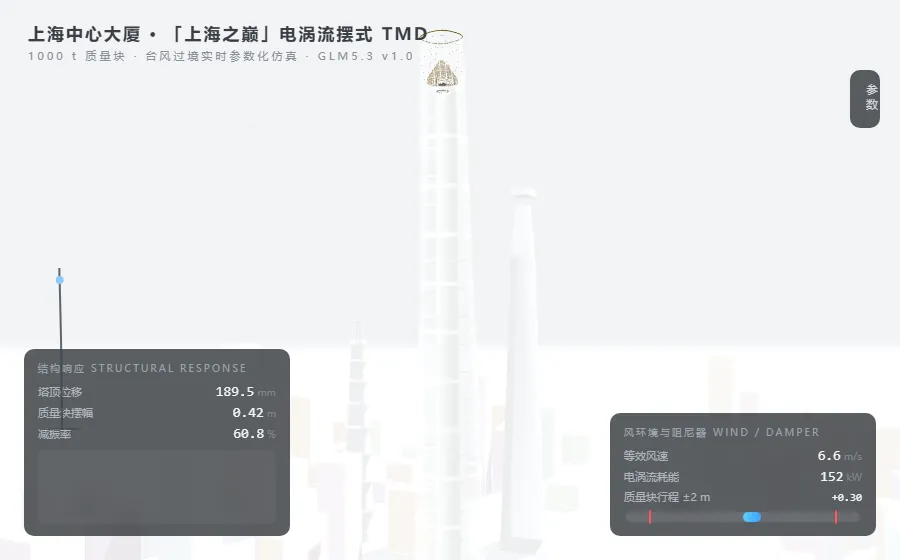
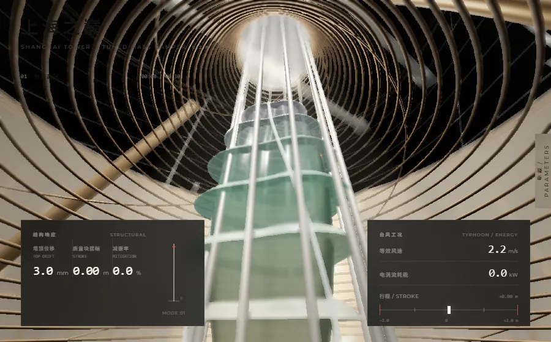
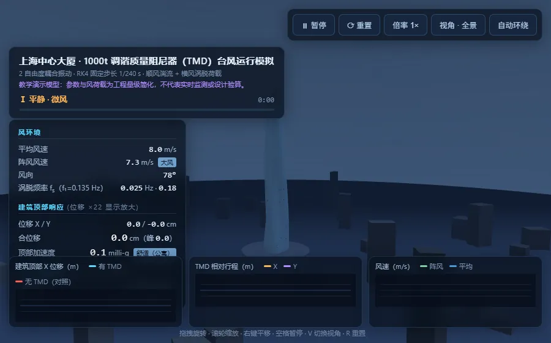
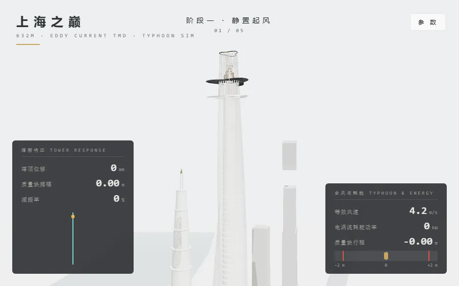
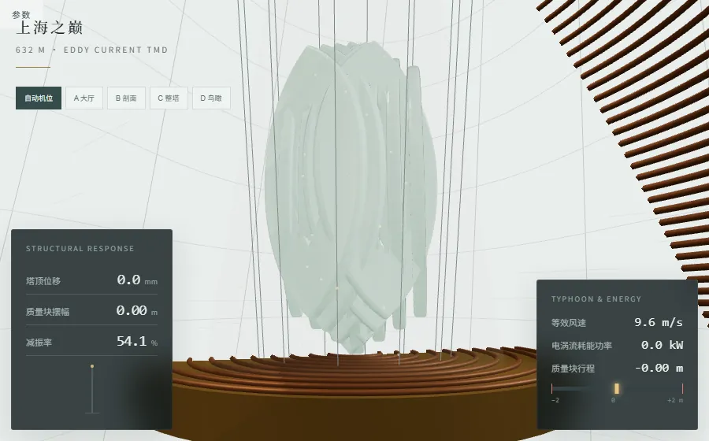

上海中心大厦 632 米的塔冠里挂着一台 1000 吨的电涡流摆式调谐质量阻尼器。台风过境时塔楼扭转弯曲振动,质量块反向复摆,摆杆在磁场中耗能,把能量吸走 —— 参数一旦失谐,减振立刻失效。这一题给模型真实的图纸资料,考照图还原的功力(红色质量块、12 根吊索、金色门架、随摆伸缩的斜撑、叠片式「上海慧眼」雕塑、圆角三角形 120° 扭转的双层幕墙、黄浦江与陆家嘴三大地标),也考工程物理的说服力(共振、反相、行程限位、减振率)。下面按模型版本归档,缩略图为真实渲染效果,点击卡片查看可交互的在线页面。






